Mostly floating
On the rivers we ride the current and paddle to steer, explore and reach camp. Yellowstone Lake is the exception: no current, real wind and full days of paddling.
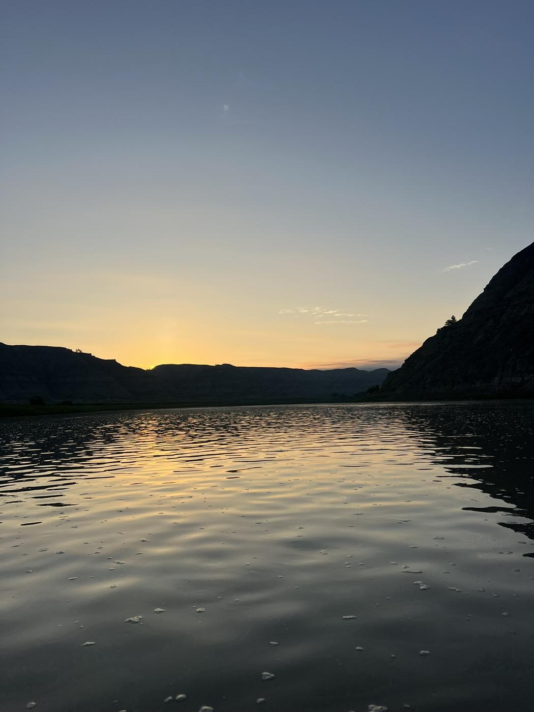
Multi-day river expeditions through the canyons and wild country of the American West, for people who build things. You bring the right attitude. We'll handle everything else.
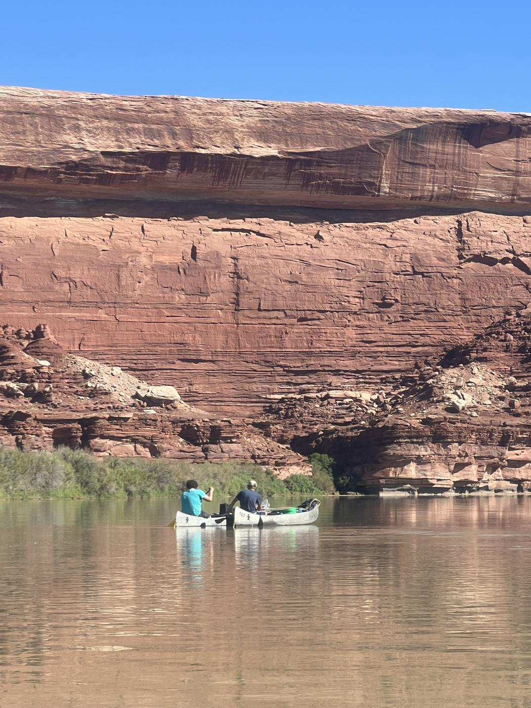
There's a moment on every trip, usually the second or third evening, when the noise finally drains out. You're sitting on a sandbar, the light is climbing the canyon walls, and it hits you. Those layers of rock took hundreds of millions of years to lay down. The river cut through them one grain at a time. Everything you were worried about when you launched fits somewhere in the thinnest line near the top.
That's what I come out here for. These places make you small, in size and in time, and that turns out to be a gift. It's the best setting I know to think about who you really are, what actually matters, and where you fit in something much bigger than your company, your calendar or your inbox.
I've never come off the river without learning something about myself. I hope everyone who joins me does the same, and carries it back into how they build, how they lead and how they live.
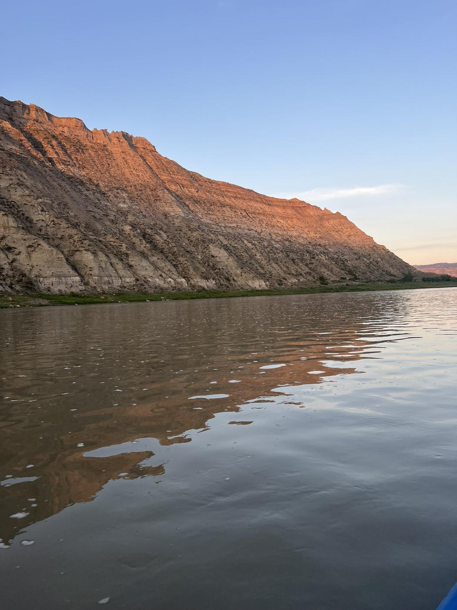
Look at the walls long enough and your problems find their proper scale.Quad, on the Missouri
Each year I plan a handful of multi-day expeditions to some of the most remote and beautiful places in the West, and invite a small group of founders, operators and investors to come along.
We float, make camp, hike side canyons, cook well, pour a proper cocktail at sunset, and have the kind of conversations that don't happen in a conference room.
You don't plan anything. I handle the logistics end to end. You get a packing list for your personal things, and I take care of the rest. Along the way you'll learn a lot about taking care of yourself in a place that isn't built for comfort.
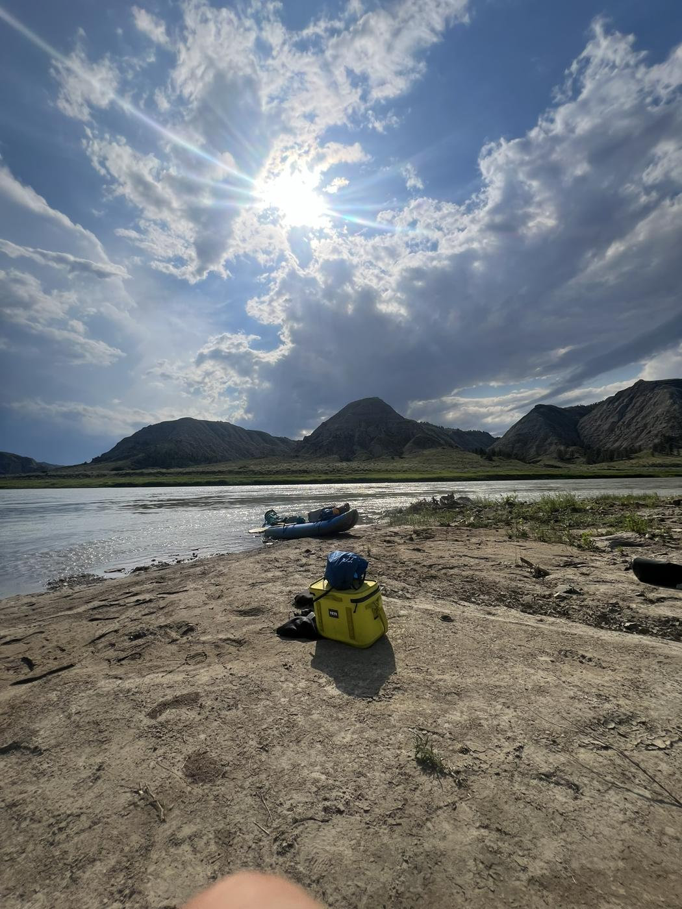
Groups are small by design. We read every response and put each group together based on fit, experience, availability and the size limits of each trip, so not every request will land on every trip.
About as luxurious as the middle of nowhere gets. No lodge, no hot shower. Top-notch gear, real meals, plenty to drink, and a very big sky.
It's less about fitness and more about being at ease with the things you'd normally avoid: being out of touch, being dirty, and going without modern conveniences.
On the rivers we ride the current and paddle to steer, explore and reach camp. Yellowstone Lake is the exception: no current, real wind and full days of paddling.
First-time paddlers are welcome. You'll learn boat handling, camp craft and how to look after yourself in a hard environment as we go.
No need to own a boat. I provide or rent boats, paddles, PFDs, dry bags and all group, kitchen and safety gear. You'll get a packing list for personal items.
Once we launch, we're committed. No cell service, and evacuation can take hours. Each trip below carries a remoteness rating from 1 to 5.
Each trip runs with a small, hand-picked group. Dates are tentative and flexible. If a trip calls to you but the dates don't work, tell us on the form and we'll try to move things around.
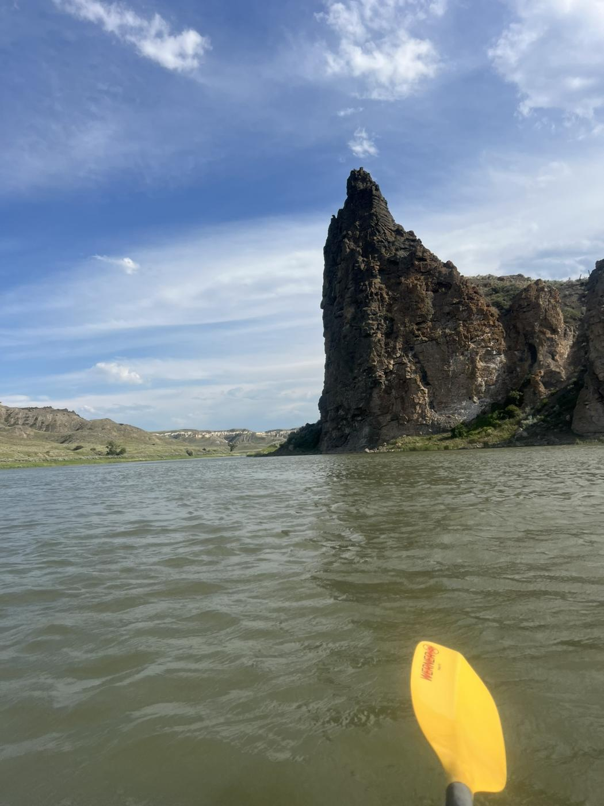
A winter escape just below Hoover Dam. We launch at the base of the dam and float roughly 30 miles through dark volcanic canyon walls. Hot springs tucked into side canyons, the glow of Emerald Cave, desert bighorn sheep on the cliffs, and warm afternoons while most of the country is frozen.
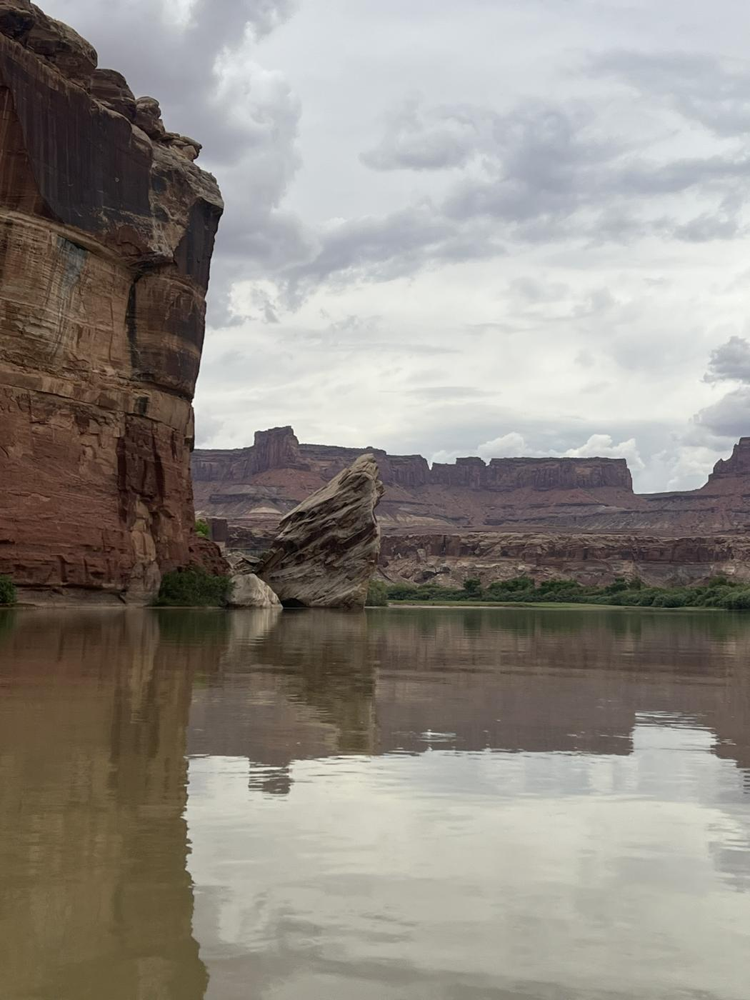
We launch just downstream of Moab for about 48 miles of calm river through the heart of Canyonlands National Park. We pass beneath Dead Horse Point, wind through Meander Canyon and reach the Confluence, where the Green and Colorado meet. At Spanish Bottom, a steep hike climbs toward the Doll House in the Maze. A jetboat brings us back upriver.
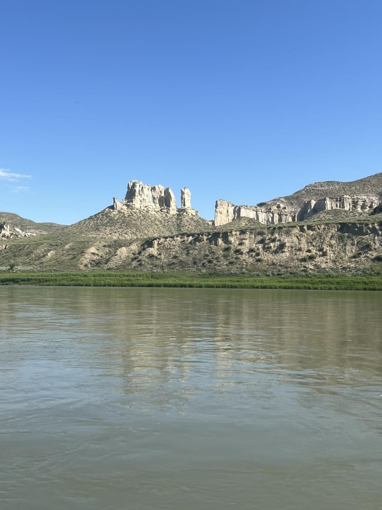
Montana's most coveted float: about 59 roadless miles through limestone canyons up to 1,500 feet deep, timed for spring high water. Expect pictographs, osprey and eagles, excellent trout water, and campsites you can't reach any other way.
Permits are awarded by lottery, so this trip depends on the draw.
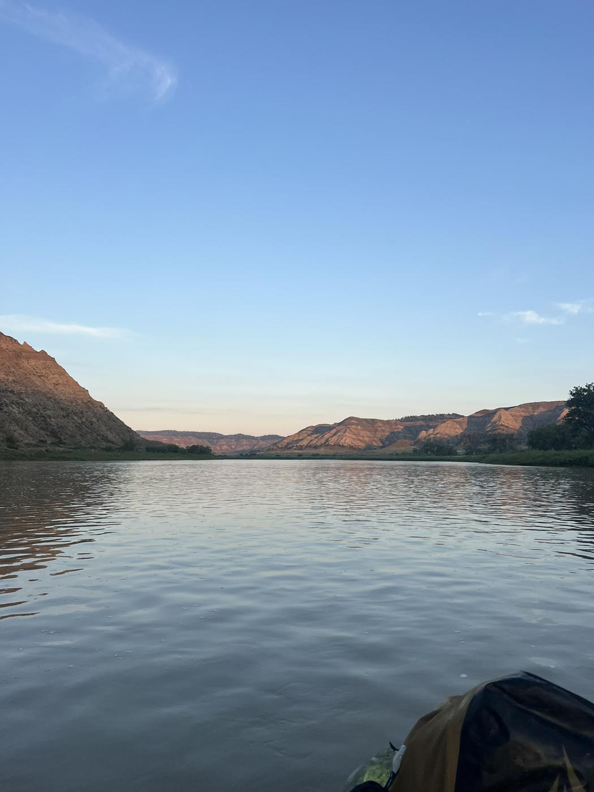
The full run from Bluff to Clay Hills, about 84 miles through Utah's red rock. Ancestral Puebloan cliff dwellings and petroglyph panels, the Goosenecks from below, the hike up the Honaker Trail, and some fun Class II water along the way. The longest desert trip of the year, and the most varied.
Shorter versions of this trip are possible. Tell us on the form if that would make it work for you.
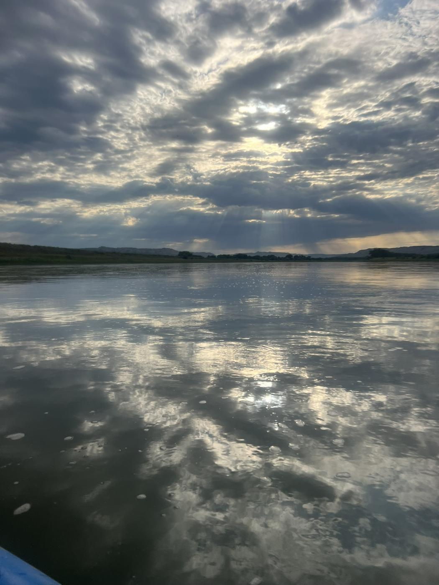
We paddle into the no-motor arms of North America's largest high-altitude lake and camp at backcountry sites beneath the Absaroka Range. Bison, moose, bald eagles and grizzly country. The water is cold and the afternoon winds are serious. Early starts, big views and very few people. The one trip on the calendar that calls for steady paddling.
Shorter versions of this trip are possible. Tell us on the form if that would make it work for you.
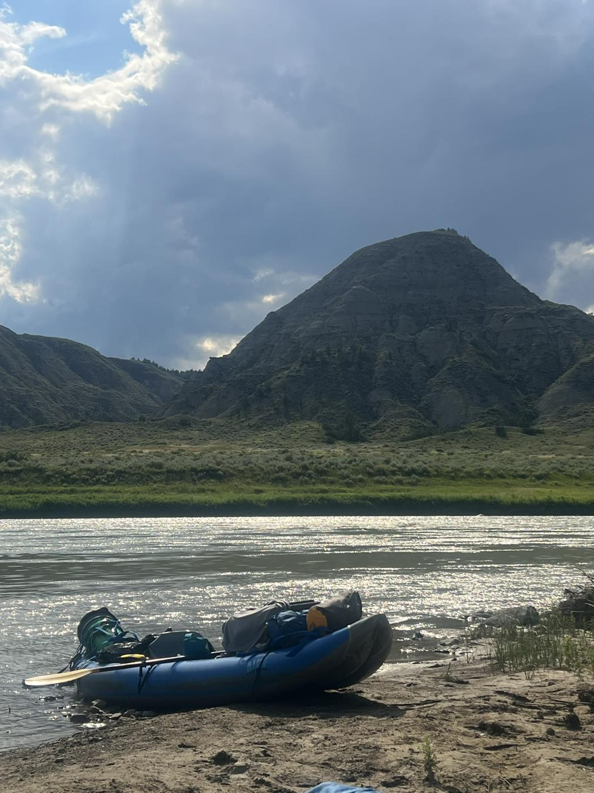
One more before winter. The options: a San Juan run in cooler October weather, Labyrinth Canyon on the Green River, or the Rio Grande through Big Bend in November. Tell us which one calls to you and we'll let interest decide.
To be determined per trip. Participants share actual trip costs (permits, shuttles, boat and gear rental, food and drink), and I handle all the arrangements.
Tentative and subject to change based on permits, river flows and weather. If the dates don't work for you, tell us. We'll move things where we can.
Expressing interest isn't a commitment on either side. We review every response and curate each group based on fit, experience, availability and group size limits.
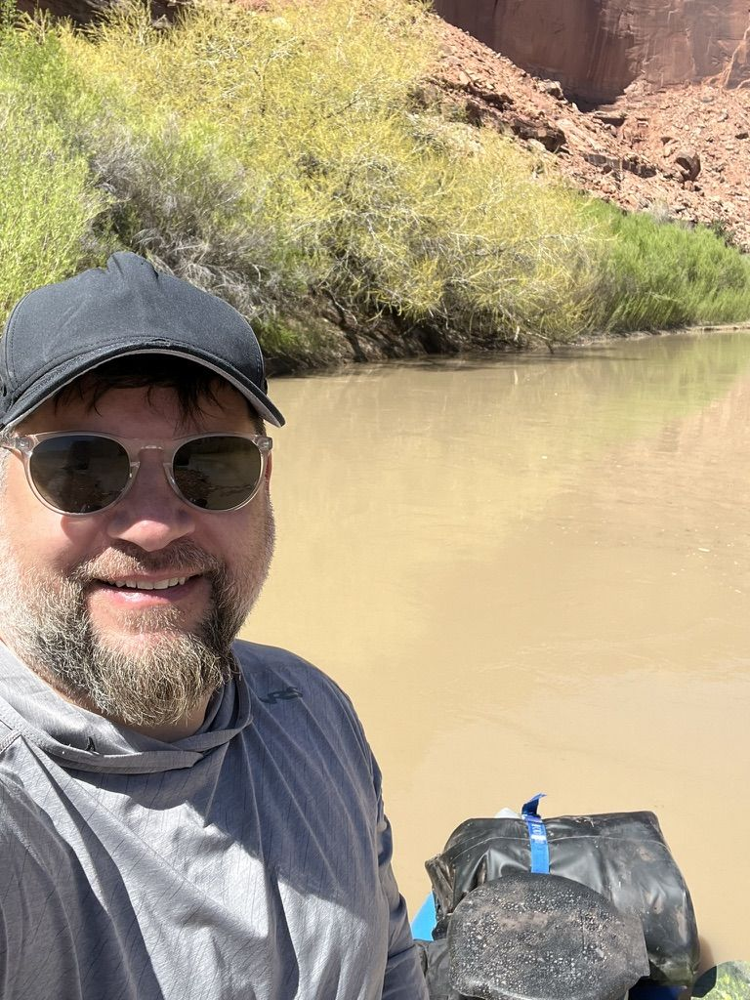
I'm an investor and entrepreneur. I build insurance startups and run Foundry Grove, which helps startups build the operating systems that run their businesses.
Over the past ten years I've done dozens of expeditions through the American West: paddling, hiking, camping and being one with nature. These trips are how I reset, ground myself and rediscover my purpose in this universe.
I love sharing that experience with fascinating people who are looking for the same thing.
These places are far from help, so safety is planned in from the start. Here's what that looks like on every trip.
No. First-timers are welcome. Most of these trips are floats on moving water, and you'll pick up what you need on the first day. Attitude matters more than skill.
Costs are still being worked out and will vary by trip. Everyone shares the actual trip costs (permits, shuttles, boat and gear rental, food and drink), and I handle all the arrangements.
Just personal items: clothing, a sleeping bag and pad if you have them, toiletries and anything personal. You'll get a packing list well ahead of time. Boats, paddles, life jackets, dry bags, kitchen and camp gear are covered.
We rendezvous at the nearest airport and arrange transportation to the put-in. Our vehicles will be waiting for us at the take-out, and we drive straight to the nearest hot shower.
Plan to be out of touch. There's no cell service on the river. The satellite phone is for emergencies, and we send a daily "we're OK" text to your loved ones. Let your people know you'll otherwise be offline, and bring a small battery pack for your camera.
We follow Leave No Trace practices. For #2 we carry a portable river toilet called the groover. It sounds worse than it is, and it usually has the best view in camp. All liquid waste goes in the river.
We eat well: real meals cooked in camp, coffee in the morning and a proper cocktail at sunset. Tell us about any dietary restrictions on the form and we'll plan around them.
Plans can change for flows, wind, heat or permits. If we have to move or shorten a trip, you'll hear from me as early as possible.
Possibly. Groups are small and curated, so have them fill out the form too and mention each other. We'll see what works.
No commitment on either side. Tell us about yourself, which trips appeal to you and what would make them work. We review every response and curate each group based on fit, experience, availability and group size.